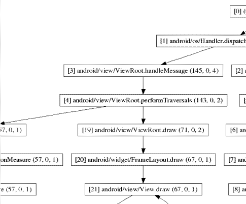

ITEEDU
跟踪视图:图形化日志查看器
跟踪视图是一个图形化的查看器，用来查看由应用程序保存的执行日志。下面的部分描述了如何使用这个程序。
内容
创建跟踪文件
为了使用跟踪视图，需要生成日志文件，它包含了你想分析的跟踪信息。为了生成日志文件，你应该在你的代码中包含Debug 类并调用它的相关方法来启动或停止记录跟踪信息到磁盘。当你的应用程序使用了它，你就可以用跟踪视图来测试日志文件以便了解有用的运行时信息，比如方法的调用和运行时间。
为了创建跟踪文件，引入Debug 类并调用它的一个方法：startMethodTracing() 调用时，给系统生成的跟踪文件指定一个基本文件名(比如Hello.trace文件的基本文件名为Hello--译者注)。要停止跟踪，调用stopMethodTracing()方法.那些开始和停止跟踪的方法是跨整个虚拟机的。比如，你可以在activity's onCreate()中调用startMethodTracing()方法，在onDestroy()中调用stopMethodTracing()方法。
// start tracing to "/sdcard/calc.trace"
Debug.startMethodTracing("calc");
// ...
// stop tracing
Debug.stopMethodTracing();
当你的应用程序调用startMethodTracing()方法时，系统调用一个称为<trace-base-name>.trace的文件。它包含了用线程和方法名来跟踪数据和一个映射表的双重方法。然后系统就开始缓存生成的跟踪数据，直到你的应用程序调用stopMethodTracing()方法，将缓存的数据写到输出文件。 如果系统在调用stopMethodTracing()方法前达到缓冲区最大值，系统就会停止跟踪并发送一个nitification到控制台。
当使用配置文件后，解释性的代码会运行得很慢。不要试图从profiler results产生absolute timings,这些时间仅仅用于和其他的概况输出，所以如果发生改变，你可以看到代码变快或变慢。
当使用Android模拟器时，你必须在跟踪文件被写到磁盘时创建一个SD卡镜像。例如，从/tools目录，当用下面的方式启动模拟器时，你可以创建一个SD卡镜像并记录它们的数量。
$ mksdcard 1024M ./imgcd $ emulator -sdcard ./img
更多的信息，参阅mksdcard tool.
跟踪文件的格式在later in this document.
复制跟踪文件到宿主机
在你的应用程序已经运行并且系统已在模拟器或一个设备上创建了你的跟踪文件 <trace-base-name>.trace后，你必须复制这些文件到你的开发环境下。 你可以使用adb pull复制文件。这里有一个例子，它显示了怎样从模拟器上的默认位置复制一个样例文件calc.trace到模拟器的宿主机的 /tmp目录:
adb pull /sdcard/calc.trace /tmp
在跟踪视图下查看跟踪文件
输入traceview<trace-base-name>，运行跟踪视图并查看跟踪文件。假设前面已经复制了跟踪文件，使用下面的命令来运行跟踪视图:
traceview /tmp/calc
跟踪视图连接日志文件并在一个窗口中显示日志文件的数据，这个窗口有两个面板:
下面的部分提供了更多关于跟踪视图输出面板的信息。
时间线面板
下面的这幅图片显示了一个闭合的时间线面板。每个线程的执行情况占据一行，时间在向右的方向上增加。每个方法以另一种颜色显示(当方法有最大包含时间按时,颜色以循环的方式重新使用)第一行下面的细线显示了所选方法的调用范围(入口或者出口)。此处调用的方法是LoadListener.nativeFinished(),它是在概要视图中被选中。

Profile Panel
下面这幅图显示的是概要面板。概要面板显示了一个方法的执行时间的摘要。这个表显示了包含的时间和独有的时间(也显示相对于总时间的百分比)。 独有时间是在方法内所花费的时间。包含时间是方法内部的执行时间和被函数调用的时间之和。我们把调用的方法称为父方法，而把被调用的方法称为子方法。 当一个方法被选择(通过单击它),它扩展显示全部父方法和子方法。父方法以紫色背景显示而子方法以黄色背景显示。表的最后一列显示的是此方法的调用次数和递归次数。 表的最后一列显示了调用的数量，在这个视图中，我们可以看到对LoadListener.nativeFinished()方法的调用有14次;看一下时间线面板，里面显示了其中的一个调用花费了很长的时间。

跟踪视图文件格式
跟踪会创建两个不同的输出片段：数据文件和key文件。数据文件持有跟踪数据，Key文件提供binary指针到线程和方法名的映射。当跟踪完成，这两个文件被合并成一个单独的.trace文件。
注意:跟踪视图前面的部分并没有为你合并那些文件，如果你仍然希望跟踪旧的key和数据文件，你可以使用下面的命令自己手动合并它们:cat mytrace.key mytrace.data > mytrace.trace.
数据文件格式
数据文件是二进制的，被组织成下面的结构(所有的值都以短结尾顺序储存):
* File format:
* header
* record 0
* record 1
* ...
*
* Header format:
* u4 magic 0x574f4c53 ('SLOW')
* u2 version
* u2 offset to data
* u8 start date/time in usec
*
* Record format:
* u1 thread ID
* u4 method ID | method action
* u4 time delta since start, in usec
应用程序首先分析所有的 header 字段 ，然后从文件的起始处寻找 “偏移数据”,从这个位置读取读9-byte的记录直到文件结束。
u8 start date/time in usec 是gettimeofday()的输出。它的作用是让你可以分辨输出是昨天产生的还是三个月前的。method action 位于重要性位居最后的两部分 当前的定义的含义是:
- 0 - 方法入口
- 1 - 方法出口
- 2 - 当异常处理不起作用时方法“退出”。
- 3 - (保留的)
一个短整型的32-bit 可以持有大约70分钟。
key文件格式
这个key文件是一个简单的文本文件。它被分为三部分，每一部分以一个'*'开头，如果你看到一行以一个'*'开头，那么它代表一个新的部分的开始。
下面是一个Key文件的例子:
*version 1 clock=global *threads 1 main 6 JDWP Handler 5 Async GC 4 Reference Handler 3 Finalizer 2 Signal Handler *methods 0x080f23f8 java/io/PrintStream write ([BII)V 0x080f25d4 java/io/PrintStream print (Ljava/lang/String;)V 0x080f27f4 java/io/PrintStream println (Ljava/lang/String;)V 0x080da620 java/lang/RuntimeException <init> ()V [...] 0x080f630c android/os/Debug startMethodTracing ()V 0x080f6350 android/os/Debug startMethodTracing (Ljava/lang/String;Ljava/lang/String;I)V *end
- 版本部分
- 第一行是此文件的版本号,当前是一。第二行，
clock=global,指明我们使用一个普通的跨所有线程的时钟。未来的版本可能会使用独自线程的CPU时间计数器，它独立于其他线程的CPU时间计数器。 - 线程部分
- 每个线程一行。每一行包括两部分:线程ID，后面接一个Tab(即制表符—译者注)，后面接线程名。对一个合法线程名的限制很少，所以从线程名后到此行结束前的部分包含了一切东西。
- 方法部分
每个方法进入或者退出使用一行。每行包含四个片段，用制表符分隔:
method-ID [TAB] class-name [TAB] method-name [TAB] signature .
只有实际进入或者退出的方法才会包括在这个列表中。注意全部三个标识符是唯一标识一个方法所必需的。
线程和方法部分都不会被保存。
跟踪视图已知的问题
- 如果一个线程在profiling中存在，这个线程的名字不会被放出;
-
虚拟机重新使用线程ID。如果一个线程停止，其他的线程启动，他们可能得到相同的ID。
使用dmtracedump
Android SDK包括dmtracedump—一个工具，给你一个可选的方式，以从跟踪日志文件来产生图形化的调用栈数据的表示。这个工具使用曲线图功效来创建图型化输出，所以在运行dmtracedump前你必须安装Graphviz。 Dmtracedump工具以树形图来生成显示调用栈的数据。 它用箭头的方向显示了调用流(从父节点到子节点)。下面的这个图显示了一个简单dmtracedump输出的例子。

For each node, dmtracedump shows <ref> callname, where
对每个节点来说，dmtracedump显示的格式为:<ref>调用名(<inc-ms>,
<exc-ms>,<numcalls>)
<ref>-- 调用引用号，用于跟踪日志<inc-ms>-- 包含的逝去时间(方法执行的毫秒数，包括所有子方法)<exc-ms>-- 独有的逝去时间(方法执行的毫秒数，不包括子方法)<numcalls>-- 调用号
Dmtracedump的使用方法:
dmtracedump [-ho] [-s sortable] [-d trace-base-name] [-g outfile] <trace-base-name>
这个工具从<trace-base-name>.data and <trace-base-name>.key加载跟踪日志数据。下表列出了dmtracedump的选项。
| Option | Description |
|---|---|
-d <trace-base-name> |
与trace名不同 |
-g <outfile> |
产生输出到< outfile > |
-h |
打开HTML输出 |
-o |
用配置替代跟踪文件 |
-d <trace-base-name> |
URL基于可排序javascript文件的位置 |
-t <percent> |
在图形中包含的子节点的最低门槛值(子节点包含的时间占父节点包含时间一定的百分比)。如果没有使用此选项，默认的门槛值是20%。 |